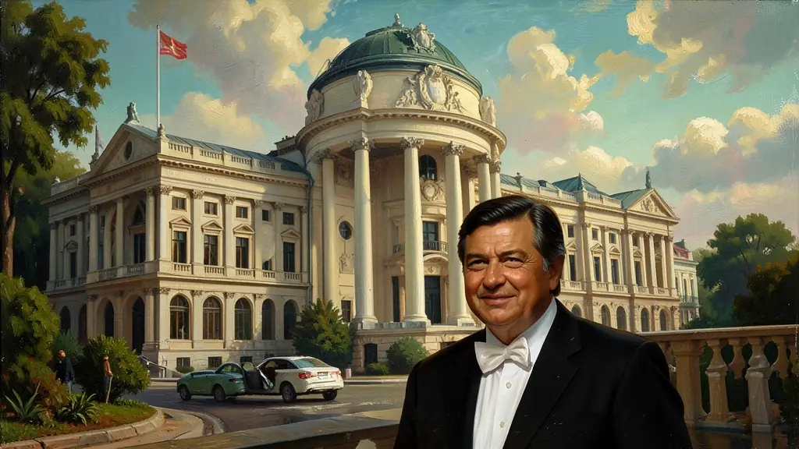
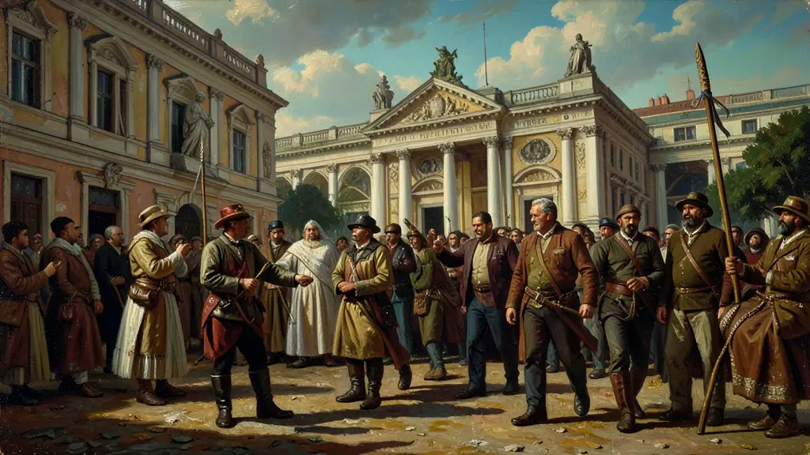

Capítulo 01
1. A Vassourinha e o Populismo Exótico
Jânio era um mestre da encenação. Ele comia sanduíche de mortadela nos comícios, usava casacos com caspa proposital e falava de forma rebuscada para parecer um intelectual do povo. Sua promessa de varrer a corrupção do governo de JK pegou em cheio a classe média cansada da inflação e das obras superfaturadas de Brasília. Ele foi o primeiro político a vencer apenas com o poder da sua imagem pessoal, sem as velhas oligarquias.

Capítulo 02
2. PEI: O Brasil entre o Tio Sam e o Urso Russo
A Política Externa Independente de Jânio dizia que o Brasil deveria negociar com quem desse mais lucro, fosse capitalista ou comunista. Ele mandou Jango para a China e convidou Che Guevara para o Palácio do Planalto. Para Jânio, isso era pragmatismo; para os generais da época, isso era alta traição e entrega do Brasil ao comunismo internacional. A medalha no peito de Che foi o beijo da morte para o mandato de Jânio.
Capítulo 03
3. Decretos de Moral e Costumes
Enquanto o país fervia com a inflação, Jânio se preocupava com o comprimento das saias e as apostas em rinhas de galo. Ele proibiu o lança-perfume no carnaval e o biquíni nas praias de Copacabana. Esses decretos serviam para distrair o povo dos problemas reais e para satisfazer a base religiosa que o apoiava, mas criaram uma imagem de um presidente instável e lunático.

Capítulo 04
4. O Blefe da Renúncia
Em 25 de agosto, Jânio escreveu seu bilhete de renúncia. Ele achava que, como Jango estava na China comunista, os militares iriam implorar para que ele ficasse e desse um golpe contra o próprio Congresso. Jânio apostou tudo no medo do povo aos comunistas. Mas o tiro saiu pela culatra: o Congresso, cansado de suas maluquices, aceitou a renúncia em minutos. Jânio Quadros pegou suas malas e foi para Santos esperar um navio, no maior erro de cálculo da história do Brasil.
Capítulo 05
5. O Vazio de Poder e a Legalidade
A saída de Jânio deixou o Brasil sem rumo. Os militares tentaram impedir a posse de Jango, o vice legal. Foi aí que surgiu a Campanha da Legalidade liderada por Brizola no Rio Grande do Sul. Para evitar a guerra civil, o Brasil virou parlamentarista por dois anos. Jânio Quadros abriu a ferida que só o golpe de 1964 conseguiria 'fechar' com o autoritarismo.
O governo de Jânio Quadros (1961) foi um dos episódios mais rápidos e dramáticos da República Brasileira, durando apenas sete meses até sua renúncia inesperada. Eleito com uma votação recorde sob o símbolo da 'vassoura' que prometia varrer a corrupção, Jânio adotou uma postura personalista e moralista, proibindo brigas de galo e o uso de biquínis. Na economia, tentou medidas de austeridade para conter a inflação, mas sua principal marca foi a Política Externa Independente (PEI), que buscava aproximar o Brasil dos países do bloco socialista e do Terceiro Mundo.
A condecoração de Ernesto 'Che' Guevara com a Ordem do Cruzeiro do Sul foi o estopim para uma crise política com as elites conservadoras e os militares. Jânio, acreditando que sua popularidade compeliria o Congresso a lhe dar poderes extraordinários, renunciou em 25 de agosto de 1961, alegando a existência de 'forças terríveis' que o impediam de governar. Esse gesto abriu uma crise sucessória gravíssima, pois os militares tentaram impedir a posse de seu vice, João Goulart, levando à Campanha da Legalidade liderada por Leonel Brizola.
Para o Enem, o estudo de Jânio Quadros é vital para compreender a instabilidade democrática que precedeu o golpe de 1964. É importante analisar como um discurso moralista e populista pode mascarar a falta de apoio partidário e a incapacidade de lidar com as instituições democráticas. A renúncia de Jânio não foi um ato de desistência, mas uma tentativa frustrada de golpe branco que acabou acelerando a polarização ideológica no Brasil da década de 60.
Fonte: SKIDMORE, Thomas. Brasil: de Castelo a Tancredo. Rio de Janeiro: Paz e Terra, 2003.
Atividades interativas
Questões para fixar
Qual era o principal objetivo da Política Externa Independente (PEI) adotada pelo governo de Jânio Quadros em 1961?
O episódio da condecoração de Che Guevara por Jânio Quadros em 1961 é interpretado pelos historiadores como:
Qual foi o símbolo utilizado por Jânio Quadros em sua campanha eleitoral em 1960?
Qual foi a consequência da renúncia de Jânio Quadros ao cargo de presidente em 1961?
Qual foi a característica da Política Externa Independente (PEI) de Jânio Quadros?